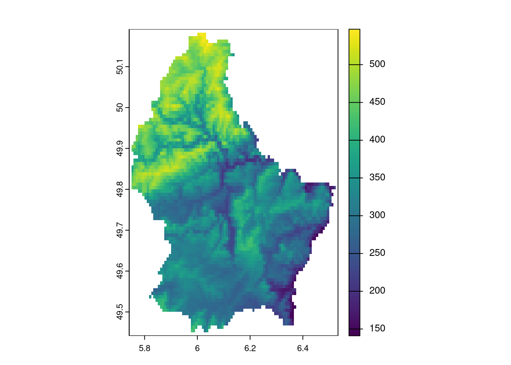
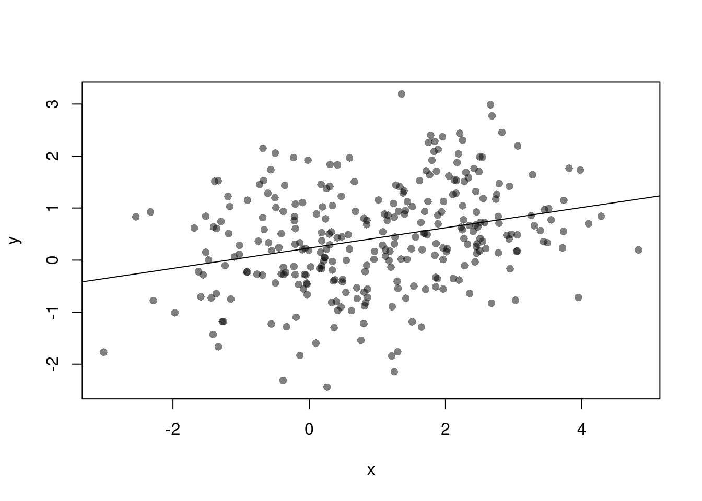

13 Observational Data
13.1 Temporal Interdependence
Many observational datasets have temporal dependence, meaning that values at one point in time are related to past values. This violates the standard assumption of independence used in many statistical methods.
Stock prices are classic examples of temporally dependent processes. If Apple’s stock was high yesterday, it is more likely (but not guaranteed) to be high today.
Code
A random walk is the simplest mathematical model of temporal dependence. Each new value is just the previous value plus a random shock (white noise).
Code
# Generate Random Walk
tN <- 200
y <- numeric(tN)
y[1] <- stock$AAPL.High[1]
for (ti in 2:tN) {
y[ti] <- y[ti-1] + runif(1, -10, 10)
}
#x <- runif(tN, -1,1) White Noise
y_dat <- data.frame(Date=1:tN, RandomWalk=y)
fig <- plot_ly(y_dat, type = 'scatter', mode = 'lines') %>%
add_trace(x=~Date, y=~RandomWalk) %>%
layout(showlegend = F)
figIn both plots, we see that today’s value is not independent of past values. In contrast to cross-sectional data (e.g. individual incomes), time series often require special methods to account for memory and nonstationarity.
Stationary.
A stationary time series is one whose statistical properties — mean, variance, and autocovariance — do not change over time. Formally
- Stationary Means: \(E[y_{t}]=E[y_{t'}]\) for all periods \(t, t'\)
- Stationary Vars: \(V[y_{t}]=V[y_{t'}]\) for all periods \(t, t'\)
E.g., \(y_t = \beta t + u_t, \quad u_t \sim \text{N}(0, \sigma + \alpha t)\)
Code
tN <- 200
simulate_series <- function(beta, alpha, sigma=.2){
y <- numeric(tN)
for (ti in 1:tN) {
mean_ti <- beta*ti
sd_ti <- (.2 + alpha*ti)
y[ti] <- mean_ti + rnorm(1, sd=sd_ti)
}
return(y)
}
# Plotting Functions
plot_setup <- function(alpha, beta){
plot.new()
plot.window(xlim=c(1,tN), ylim=c(-5,20))
axis(1)
axis(2)
mtext(expression(y[t]),2, line=2.5)
mtext("Time (t)", 1, line=2.5)
}
plot_title <- function(alpha, beta){
beta_name <- ifelse(beta==0, 'Mean Stationary', 'Mean Nonstationary')
alpha_name <- ifelse(alpha==0, 'Var Stationary', 'Var Nonstationary')
title(paste0(beta_name,', ', alpha_name), font.main=1, adj=0)
}
par(mfrow = c(2, 2))
for(alpha in c(0,.015)){
for(beta in c(0,.05)){
plot_setup(alpha=alpha, beta=beta)
for( sim in c('red','blue')){
y_sim <- simulate_series(beta=beta, alpha=alpha)
lines(y_sim, col=adjustcolor(sim ,alpha.f=0.5), lwd=2)
}
plot_title(alpha=alpha, beta=beta)
}}
Measures of temporal association.
Time series often exhibit serial dependence—values today are related to past values, and potentially to other processes evolving over time. We can visualize this using correlation-based diagnostics.
The Autocorrelation Function (AFC) measures correlation between a time series and its own lagged values:
\(ACF_{Y}(k) = \frac{Cov(Y_{t},Y_{t-k})}{ \sqrt{Var(Y_{t})Var(Y_{t-k})}}\)
This helps detect temporal persistence (memory). For stationary processes, the ACF typically decays quickly, whereas for nonstationary processes, it typically decays slowly or persists.
Code

The Cross-Correlation Function (CCF) measures correlation between two time series at different lags:
\(CCF_{YX}(k) = \frac{Cov(Y_{t},X_{t-k})}{ \sqrt{Var(Y_t)Var(X_{t-k})}}\)
This is useful for detecting lagged relationships between two series, such as leading indicators or external drivers. (If \(X\) is white noise, any visible structure in the CCF likely reflects nonstationarity in \(Y\).)
Code

13.2 Spatial Interdependence
Many observational datasets exhibit spatial dependence, meaning that values at one location tend to be related to values at nearby locations. This violates the standard assumption of independent observations used in many classical statistical methods.
For example, elevation is spatially dependent: if one location is at high elevation, nearby locations are also likely (though not guaranteed) to be high. Similarly, socioeconomic outcomes like disease rates or income often cluster geographically due to shared environmental or social factors.
Just as stock prices today depend on yesterday, spatial variables often depend on neighboring regions, creating a need for specialized statistical methods that account for spatial autocorrelation.
Raster vs. Vector Data.
Spatial data typically comes in two formats, each suited to different types of information:
- Vector data uses geometric shapes (points, lines, polygons) to store data. E.g., a census tract map that stores data on population demographics.
- Raster data uses grid cells (typically squares, but sometimes hexagons) to store data. E.g., an image that stores data on elevation above seawater.
Code
# Vector Data
library(sf)
northcarolina_vector <- st_read(system.file("shape/nc.shp", package="sf"))
## Reading layer `nc' from data source `/home/Jadamso/R-Libs/sf/shape/nc.shp' using driver `ESRI Shapefile'
## Simple feature collection with 100 features and 14 fields
## Geometry type: MULTIPOLYGON
## Dimension: XY
## Bounding box: xmin: -84.32385 ymin: 33.88199 xmax: -75.45698 ymax: 36.58965
## Geodetic CRS: NAD27
plot(northcarolina_vector['BIR74'], main='Number of Live Births in 1974')
Code

Stationary.
Just as with temporal data, stationarity in spatial data means that the statistical properties (like mean, variance, or spatial correlation) are roughly the same across space.
- Stationary Means: \(E[y(s)]=E[y(s')]\) for all locations \(s,s'\)
- Stationary Vars: \(V[y(s)]=V[y(s')]\) for all locations \(s,s'\)
Code
# Simulated 2D spatial fields
set.seed(1)
n <- 20
x <- y <- seq(0, 1, length.out = n)
grid <- expand.grid(x = x, y = y)
# 1. Stationary: Gaussian with constant mean and var
z_stationary <- matrix(rnorm(n^2, 0, 1), n, n)
# 2. Nonstationary: Mean increases with x and y
z_nonstationary <- outer(x, y, function(x, y) 3*x*y) + rnorm(n^2, 0, 1)
par(mfrow = c(1, 2))
# Stationary field
image(x, y, z_stationary,
main = "Stationary Field",
col = terrain.colors(100),
xlab = "x", ylab = "y")
# Nonstationary field
image(x, y, z_nonstationary,
main = "Nonstationary Field",
col = terrain.colors(100),
xlab = "x", ylab = "y")
Measures of spatial association.
Just like temporal data may exhibit autocorrelation, spatial data may show spatial autocorrelation or spatial cross-correlation—meaning that observations located near each other are more (or less) similar than we would expect under spatial independence.
Autocorrelation. We can measure spatial autocorrelation using Moran’s I, a standard index of spatial dependence. Global Moran’s I summarizes overall spatial association (just like the ACF)
Code
Cross-Correlation. We can also assesses the relationship between two variables at varying distances.
Code
# Vector Data Example
dat <- as.data.frame(northcarolina_vector)[, c('BIR74', 'SID74')]
mu <- colMeans(dat)
# Format Distances
dmat <- st_distance( st_centroid(northcarolina_vector) )
dmat <- units::set_units(dmat, 'km')
# At Which Distances to Compute CCF
# summary(dmat[,1])
rdists <- c(-1,seq(0,100,by=25)) # includes 0
rdists <- units::set_units(rdists , 'km')
# Compute Cross-Covariances
varXY <- prod( apply(dat, 2, sd) )
CCF <- lapply( seq(2, length(rdists)), function(ri){
# Which Observations are within (rmin, rmax] distance
dmat_r <- dmat
d_id <- (dmat_r > rdists[ri-1] & dmat_r <= rdists[ri])
dmat_r[!d_id] <- NA
# Compute All Covariances (Stationary)
covs_r <- lapply(1:nrow(dmat_r), function(i){
pairsi <- which(!is.na(dmat_r[i,]))
covXiYj <- sapply(pairsi, function(j) {
dXi <- dat[i,1] - mu[1]
dYj <- dat[j,2] - mu[2]
return(dXi*dYj)
})
return(covXiYj)
})
corXY <- unlist(covs_r)/varXY
return(corXY)
} )Code
# Plot Cross-Covariance Function
x <- as.numeric(rdists[-1])
par(mfrow=c(1,2))
# Distributional Summary
boxplot(CCF,
outline=F, whisklty=0, staplelty=0,
ylim=c(-1,1), #quantile(unlist(CCF), probs=c(.05,.95)),
names=x,
main='',
font.main=1,
xlab='Distance [km]',
ylab='Cross-Correlation of BIR74 and SID74')
title('Binned Medians and IQRs', font.main=1, adj=0)
abline(h=0, lty=2)
# Inferential Summary
CCF_means <- sapply(CCF, mean)
plot(x, CCF_means,
ylim=c(-1,1),
type='o', pch=16,
main='',
xlab='Distance [km]',
ylab='Cross-Correlation of BIR74 and SID74')
title('Binned Means + 95% Confidence Band', font.main=1, adj=0)
abline(h=0, lty=2)
# Quick and Dirty Subsampling CI
CCF_meanCI <- sapply(CCF, function(corXY){
ss_size <- floor(length(corXY)*3/4)
corXY_boot <- sapply(1:200, function(b){
corXY_b <- sample(corXY, ss_size, replace=F)
mean(corXY_b, na.rm=T)
})
quantile(corXY_boot, probs=c(.025,.975), na.rm=T)
})
polygon( c(x, rev(x)),
c(CCF_meanCI[1,], rev(CCF_meanCI[2,])),
col=grey(0,.25), border=NA)
13.3 Variable Interdependence
In addition to spatial and temporal dependence, many observational datasets exhibit interdependence between variables. Many economic variables are endogenous: meaning that they are an outcome determined (or caused: \(\to\)) by some other variable.
- If \(Y \to X\), then we have reverse causality
- If \(Y \to X\) and \(X \to Y\), then we have simultaneity
- If \(Z\to Y\) and either \(Z\to X\) or \(X \to Z\), then we have omitted a potentially important variable
These endogeneity issues imply \(X\) and \(\epsilon\) are correlated, which is a barrier to interpreting OLS estimates causally. (\(X\) and \(\epsilon\) may be correlated for other reasons too, such as when \(X\) is measured with error.)
Code

With multiple linear regression, endogeneity biases are not just a problem for your main variable of interest. Suppose your interested in how \(x_{1}\) affects \(y\), conditional on \(x_{2}\). Letting \(X=[x_{1}, x_{2}]\), you estimate \[\begin{eqnarray} \hat{\beta}_{OLS} = [X'X]^{-1}X'y \end{eqnarray}\] You paid special attention in your research design to find a case where \(x_{1}\) is truly exogenous. Unfortunately, \(x_{2}\) is correlated with the error term. (How unfair, I know, especially after all that work). Nonetheless, \[\begin{eqnarray} \mathbb{E}[X'\epsilon] = \begin{bmatrix} 0 \\ \rho \end{bmatrix}\\ \mathbb{E}[ \hat{\beta}_{OLS} - \beta] = [X'X]^{-1} \begin{bmatrix} 0 \\ \rho \end{bmatrix} = \begin{bmatrix} \rho_{1} \\ \rho_{2} \end{bmatrix} \end{eqnarray}\] The magnitude of the bias for \(x_{1}\) thus depends on the correlations between \(x_{1}\) and \(x_{2}\) as well as \(x_{2}\) and \(\epsilon\).
I will focus on the seminal economic example to provide some intuition.
Competitive Market Equilibrium.
This model has three structural relationships: (1) market supply is the sum of quantities supplied by individual firms at a given price, (2) market demand is the sum of quantities demanded by individual people at a given price, and (3) market supply equals market demand in equilibrium. Assuming market supply and demand are linear, we can write these three relationships as \[\begin{eqnarray} \label{eqn:market_supply} Q_{S}(P) &=& A_{S} + B_{S} P + E_{S},\\ \label{eqn:market_demand} Q_{D}(P) &=& A_{D} - B_{D} P + E_{D},\\ \label{eqn:market_eq} Q_{D} &=& Q_{S} = Q. %% $Q_{D}(P) = \sum_{i} q_{D}_{i}(P)$, \end{eqnarray}\] This last equation implies a simultaneous “reduced form” relationship where both the price and the quantity are outcomes. With a linear parametric structure to these equations, we can use algebra to solve for the equilibrium price and quantity analytically as \[\begin{eqnarray} P^{*} &=& \frac{A_{D}-A_{S}}{B_{D}+B_{S}} + \frac{E_{D} - E_{S}}{B_{D}+B_{S}}, \\ Q^{*} &=& \frac{A_{S}B_{D}+ A_{D}B_{S}}{B_{D}+B_{S}} + \frac{E_{S}B_{D}+ E_{D}B_{S}}{B_{D}+B_{S}}. \end{eqnarray}\]
Code
# Demand Curve Simulator
qd_fun <- function(p, Ad=8, Bd=-.8, Ed_sigma=.25){
Qd <- Ad + Bd*p + rnorm(1,0,Ed_sigma)
return(Qd)
}
# Supply Curve Simulator
qs_fun <- function(p, As=-8, Bs=1, Es_sigma=.25){
Qs <- As + Bs*p + rnorm(1,0,Es_sigma)
return(Qs)
}
# Quantity Supplied and Demanded at 3 Prices
cbind(P=8:10, D=qd_fun(8:10), S=qs_fun(8:10))
## P D S
## [1,] 8 1.1925652 0.01120111
## [2,] 9 0.3925652 1.01120111
## [3,] 10 -0.4074348 2.01120111
# Market Equilibrium Finder
eq_fun <- function(demand, supply, P){
# Compute EQ (what we observe)
eq_id <- which.min( abs(demand-supply) )
eq <- c(P=P[eq_id], Q=demand[eq_id])
return(eq)
}Code
# Simulations Parameters
N <- 300 # Number of Market Interactions
P <- seq(5,10,by=.01) # Price Range to Consider
# Generate Data from Competitive Market
# Plot Underlying Process
plot.new()
plot.window(xlim=c(0,2), ylim=range(P))
EQ1 <- sapply(1:N, function(n){
# Market Data Generating Process
demand <- qd_fun(P)
supply <- qs_fun(P)
eq <- eq_fun(demand, supply, P)
# Plot Theoretical Supply and Demand
lines(demand, P, col=grey(0,.01))
lines(supply, P, col=grey(0,.01))
points(eq[2], eq[1], col=grey(0,.05), pch=16)
# Save Data
return(eq)
})
axis(1)
axis(2)
mtext('Quantity',1, line=2)
mtext('Price',2, line=2)
Suppose we ask “what is the effect of price on quantity?” You can simply run a regression of quantity (“Y”) on price (“X”): \(\widehat{\beta}_{OLS} = Cov(Q^{*}, P^{*}) / Var(P^{*})\). You get a number back, but it is hard to interpret meaningfully.
Code
# Analyze Market Data
dat1 <- data.frame(t(EQ1), cost='1', T=1:N)
reg1 <- lm(Q~P, data=dat1)
summary(reg1)
##
## Call:
## lm(formula = Q ~ P, data = dat1)
##
## Residuals:
## Min 1Q Median 3Q Max
## -0.57279 -0.11977 -0.00272 0.11959 0.45525
##
## Coefficients:
## Estimate Std. Error t value Pr(>|t|)
## (Intercept) -0.21323 0.43212 -0.493 0.6221
## P 0.12355 0.04864 2.540 0.0116 *
## ---
## Signif. codes: 0 '***' 0.001 '**' 0.01 '*' 0.05 '.' 0.1 ' ' 1
##
## Residual standard error: 0.1674 on 298 degrees of freedom
## Multiple R-squared: 0.02119, Adjusted R-squared: 0.0179
## F-statistic: 6.451 on 1 and 298 DF, p-value: 0.0116This simple derivation has a profound insight: price-quantity data does not generally tell you how price affects quantity (or vice-versa). The reason is simultaneity: price and quantity mutually cause one another in markets.6
Moreover, this example also clarifies that our initial question “what is the effect of price on quantity?” is misguided. We could more sensibly ask “what is the effect of price on quantity supplied?” or “what is the effect of price on quantity demanded?”
Although there are many ways this simultaneity can happen, economic theorists have made great strides in analyzing the simultaneity problem as it arises from equilibrium market relationships. In fact, 2SLS arose to understand agricultural markets.↩︎